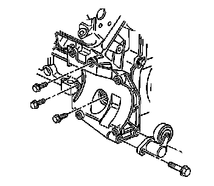

Air Conditioning Compressor Mounting Bracket Replacement
COMPRESSOR MOUNTING BRACKET REPLACEMENT
REMOVAL PROCEDURE
1. Remove the A/C compressor.
2. Remove the A/C belt tensioner bolts.
3. Remove the A/C belt tensioner.

4. Remove the A/C compressor bracket mounting bolts.
5. Remove the A/C compressor bracket.
INSTALLATION PROCEDURE
1. Install the A/C compressor bracket.
2. NOTE: Refer to Fastener Notice.
Install the A/C compressor bracket mounting bolts.
Tighten the bolts to 50 N.m (37 lb ft).
3. Install the A/C belt tensioner.
4. Install the A/C belt tensioner bolts.
Tighten the bolts to 50 N.m (37 lb ft).
5. Install the A/C compressor.